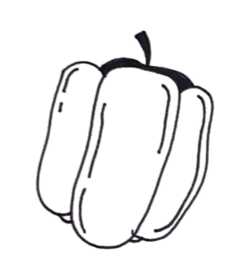

Welkom bij de Buurtmoestuin! Hier ontdek je alles over de Zeeburgertuin en meer. Geniet van heerlijke recepten met onze eigen groenten en schrijf je in voor leuke buurtactiviteiten via de agenda.
De Buurtmoestuin brengt de Amsterdam Oost gemeenschap samen in duurzame activiteiten. Samen groenten kweken is niet alleen leuk, maar helpt ook tegen eenzaamheid. Jong en oud leren van elkaar en laten mooie dingen groeien.
De Zeeburgertuin in Amsterdam is een bijzondere gemeenschapstuin waar buurtbewoners samenkomen om te tuinieren en van de natuur te genieten. Hier groeien diverse bloemen, planten en groenten die met liefde worden verzorgd. De opbrengst wordt gedeeld met de lokale gemeenschap voor verse, biologische groenten.
Het is een inspirerende ontmoetingsplek waar natuurlijke schoonheid en gemeenschapsgevoel samenkomen, waar mensen van alle leeftijden en achtergronden elkaar treffen, kennis delen en vriendschappen kunnen ontstaan.